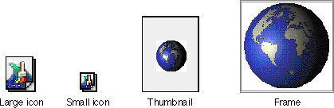

View Type
In a document window, most parts draw themselves in framed areas displaying their content. However, a part can also display itself as one of three types of icons. As shown in Figure 12-1, there are four view types: large icon, small icon, thumbnail, and frame.Figure 12-1 OpenDoc view types

Programmatically, every part is displayed in a frame, regardless of its view type. However, for the purposes of this book and the human interface with which the user interacts (via the View As menu in the Part Info dialog box), the term frame is used to mean the view type in which all of a part's content is visible and manipulable. A single part can, of course, display its content in more than one frame, and each frame can show a different view type. Also, regardless of the view type of a part, it can be selected or inactive. (Only parts displayed in frame view type can be active.)All parts must support all view types, at least to the extent appropriate to their content model. A sound part, for example, might have thumbnail and frame view types whose appearances are not very different from its icon appearance, because its content and its ability to play sound or be embedded in another part are unrelated to its visual form.
Preferred View Type for Embedded Parts
By convention, most parts displayed in an open document have a frame view type, and most parts on the desktop or in desktop folders have an icon view type. Parts in icon view that are dragged from the Finder and dropped onto an open document should change to frame view; parts in frame view dragged to the desktop or desktop folders should change to icon view.Despite these conventions, the containing part controls the view types of its embedded parts. An embedded part should initially appear in whatever view type its containing part sets when it creates the embedded part's frame. The user can subsequently change the view type of the embedded part by using the Part Info dialog box or a View menu, if the containing part provides one.